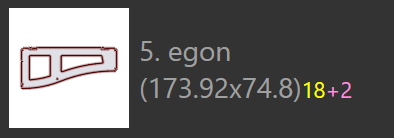

Táblásítási üzemmódok
A TecZone Laser táblásítási modulja hatékonyan képes összeállítani elrendezéseket a táblásítási feladatokból. Bármelyik táblásított elrendezést (vagy akár egy üres lemezt) is kiválaszthatja és interaktív módon részeket adhat hozzá, mozgathatja és forgathatja azt.
Automatikus táblásítás
Először lemezekat és alkatrészeket kell hozzáadni egy táblásítási feladathoz. Ha azután átkapcsol az Layoutek lapra, akkor a táblaterv automatikusan is elkészíthető. Ezt követően módosíthatja az alkatrészek listáját vagy néhány beállítást, majd több lehetőség közül választhat új táblaterv készítéséhez különböző beállításokkal.
További alkatrészek hozzáadása egy lemezhez
Tegyük fel, hogy néhány további alkatrészt adott hozzá a táblásítási feladathoz és azok még nem lettek kiosztva a táblatervben. Ha a beágyazó modult szeretné használni az alkatrészek lemezen történő elhelyezéséhez, akkor először layout[1] listájából válassza aki azt, amelyiket használni szeretné (gyakran ez az utolsó lemez, amely valószínűleg csak részben van kitöltve alkatrészekkel). Ezután kattintson a bal oldali eszköztáron található Nest ikonra, majd válassza: Pack remaining sheet area automatically csoportra lesz érvényes. [2] image::AutoNest.png[Auto-Nest,906]
A beágyazásra váró alkatrészek a lemez fennmaradó területén kerülnek elhelyezése. Ez az opció nem módosítja a lemezen már elhelyezett alkatrészeket és néha arra használják, hogy egy lemezt részben manuálisan táblásítsanak, majd a táblásító modullal végezzék el a táblásítás többi részét. Az alábbi ábrán sárga színnel jelöltük az újonnan hozzáadott alkatrészeket; a régebbi alkatrészek nem kerültek áthelyezésre:
Átrendezés – maradéklemez
Ha nem szükséges a régebbi alkatrészek pozícióját megőrizni, akkor jobb eredményt érhet el, ha a táblásítási modultól kéri a teljes lemez átrendezését. Válassza a Rearrange to create a remainder sheet lehetőséget és a TecZone Laser újra elrendezi az összes alkatrészt a lemezen, megpróbálva egy tiszta, téglalap alakú maradéklemezt létrehozni a jobb oldalon, amely nyersanyagként felhasználható egy későbbi táblatervhez.
Látható, hogy a fenti lemez ugyanazokat az alkatrészeket tartalmazza, mint korábban, de tömörebben vannak elhelyezve, így a maradéklemez levágható és felhasználható.
Átrendezés – a teljes lemeztábla felhasználása
Ha a maradéklemez túl kicsi ahhoz, hogy felhasználható legyen, érdemes megkérni a táblásító modult, hogy kicsit lazábban helyezze el alkatrészeket a lemezen, így minden alkatrész a lapon marad, de az alkatrészek közötti távolság nő, így a lemez teljes területe kihasználható. Ehhez válassza az Rearrange to use full sheet lehetőséget a menüből:

Manuális táblásítás
Nyisson meg egy elrendezést szerkesztésre a Feladat panel Elrendezések füléről, vagy egy korábban elmentett .fxlyt fájl megnyitásával.
Alkatrészek hozzáadása
Alkatrészeket adhat hozzá az elrendezéshez a bal oldali eszköztáron található Hozzáadás gomb megnyomásával. Megjelenik az összes alkatrész listája, amely a táblásítási feladatban szerepel:

Ha a listában egy alkatrészre kattint, az a lemezre kerül hozzáadásra (a táblásító modul megpróbálja megtalálni az alkatrész optimális pozícióját, de ezt Ön később megváltoztathatja). Az alkatrész-jelmagyarázat különböző színeket használ a különböző jelentésekhez, az alábbiak szerint:
|
12 alkatrész táblásítva (szükséges mennyiség) |
|
2 alkatrésszel kevesebb van beágyazva a táblaterven, mint amennyi szükséges |
 |
18 alkatrész szükséges, 20 elhelyezve a táblaterven (+2) |
|
A szükséges mennyiségű 24 alkatrész elhelyezésre került a táblaterven |


Az egérmutatót az alkatrészek listáján mozgatva,TecZone Laser azonnal kiszámítja az alkatrész megfelelő elhelyezkedését és kék színnel ideiglenesen beilleszti a lemezre, hogy eldönthesse, megfelelő-e az illeszkedés. Így az egérmutatót az alkatrészek fölé mozgatva és azokra rákattintva gyorsan több alkatrészt is elhelyezhet a lemezen.

| Miután az alkatrészeket elhelyezték a lemezen, azok áthelyezhetők, elforgathatók vagy megismételhetők az Elhelyezés panel segítségével. |